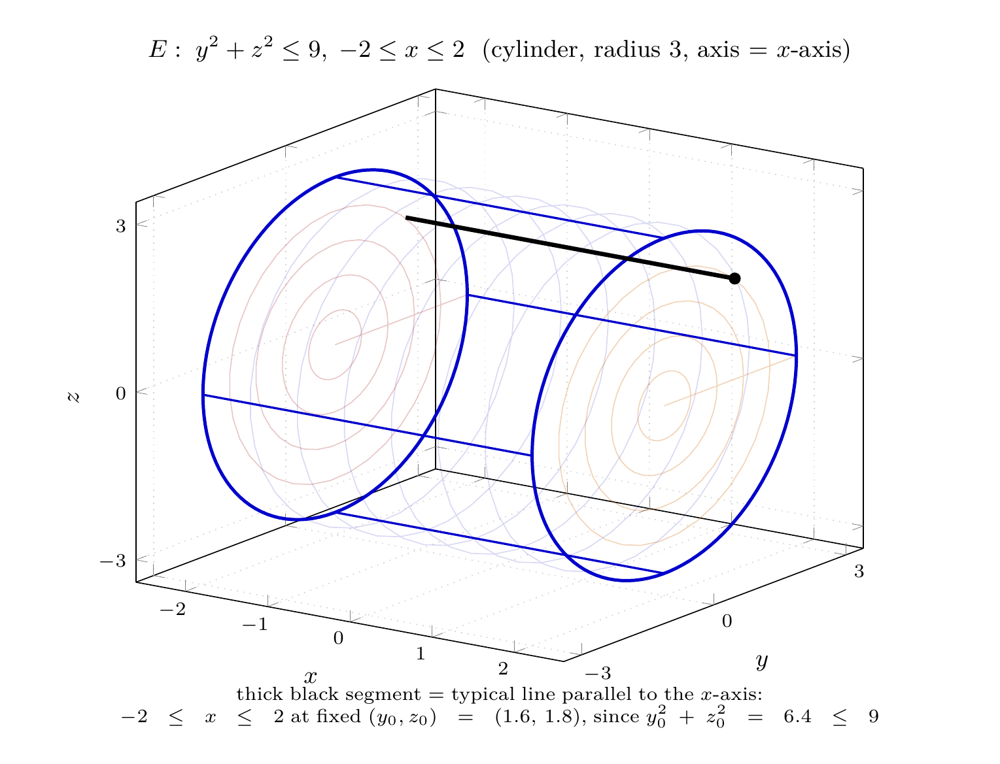

Please solve the problem in the following image.
(Image `20260927_235211_090288_utc_0800_0.png`. Alt text: Image: human_20260927_235211_090288_utc_0800)
20260927_235211_090288_utc_0800_0.png
End of problem
Answer
## Setting up: identify the solid $E$
The bounding surfaces are
$$
y^{2}+z^{2}=9,\qquad x=-2,\qquad x=2 .
$$
The first equation involves **only** $y$ and $z$: it is a circular cylinder of radius $3$ whose axis is the $x$-axis. The planes $x=\pm2$ cap it. So
$$
E=\{(x,y,z):\; y^{2}+z^{2}\le 9,\;-2\le x\le 2\}.
$$
Every line parallel to the $x$-axis enters $E$ at $x=-2$ and leaves at $x=2$ — the $x$-limits are **constants**, independent of $y,z$. That is the key structural fact.
---
\documentclass[border=10pt]{standalone}
\usepackage{pgfplots}
\pgfplotsset{compat=1.18, trig format plots=deg}
\begin{document}
\begin{tikzpicture}
\begin{axis}[
width=11cm, height=9cm,
view={35}{20},
xlabel=$x$, ylabel=$y$, zlabel=$z$,
xmin=-2.6, xmax=2.6, ymin=-3.4, ymax=3.4, zmin=-3.4, zmax=3.4,
xtick={-2,...,2}, ytick={-3,0,3}, ztick={-3,0,3},
tick label style={font=\scriptsize}, label style={font=\small},
title style={font=\small},
title={$E:\;y^{2}+z^{2}\le 9,\;-2\le x\le 2$ \ (cylinder, radius 3, axis $=$ $x$-axis)},
grid=major, grid style={dotted, gray!35},
]
% lateral surface
\addplot3[blue!70!black, opacity=0.15, shader=flat, domain=0:360, y domain=-2:2,
samples=36, samples y=8] (y, {3*cos(x)}, {3*sin(x)});
% end caps (disks in the planes x=-2 and x=2)
\addplot3[red!60!black, opacity=0.22, shader=flat, domain=0:360, y domain=0:3,
samples=36, samples y=6] (-2, {y*cos(x)}, {y*sin(x)});
\addplot3[orange!80!black, opacity=0.28, shader=flat, domain=0:360, y domain=0:3,
samples=36, samples y=6] (2, {y*cos(x)}, {y*sin(x)});
% boundary circles
\addplot3[blue!80!black, very thick, domain=0:360, samples=120] (2, {3*cos(x)}, {3*sin(x)});
\addplot3[blue!80!black, very thick, domain=0:360, samples=120] (-2, {3*cos(x)}, {3*sin(x)});
% four generators
\addplot3[blue!80!black, thick] coordinates {(-2,3,0) (2,3,0)};
\addplot3[blue!80!black, thick] coordinates {(-2,-3,0) (2,-3,0)};
\addplot3[blue!80!black, thick] coordinates {(-2,0,3) (2,0,3)};
\addplot3[blue!80!black, thick] coordinates {(-2,0,-3) (2,0,-3)};
% typical segment parallel to the x-axis
\addplot3[black, line width=1.6pt, forget plot, domain=-2:2, samples=2] (x, 1.6, 1.8);
\addplot3[only marks, mark=*, forget plot, mark size=2pt, black] coordinates {(2,1.6,1.8)};
\end{axis}
% caption placed safely below the whole axis box
\node[font=\scriptsize, anchor=north, align=center, text width=12cm]
at ([yshift=-6pt]current axis.south)
{thick black segment $=$ typical line parallel to the $x$-axis:\\
$-2\le x\le 2$ at fixed $(y_0,z_0)=(1.6,\,1.8)$, since $y_0^{2}+z_0^{2}=6.4\le 9$};
\end{tikzpicture}
\end{document}

pgfplots_0.png
---
## The rule for choosing the six orders
There are $3!=6$ possible orders $du\,dv\,dw$. For each, ask: *which variable is scanned first (innermost)?*
- **$x$ innermost** $\Rightarrow$ its limits are always $-2\le x\le 2$ (constants). The remaining two variables, $y$ and $z$, fill the outer slots and must describe the **disk** $D=\{y^{2}+z^{2}\le 9\}$ in the $yz$-plane, Type-I or Type-II:
$$dx\,dy\,dz:\ \int_{-3}^{3}\!\int_{-\sqrt{9-z^{2}}}^{\sqrt{9-z^{2}}}\!\int_{-2}^{2},
\qquad
dx\,dz\,dy:\ \int_{-3}^{3}\!\int_{-\sqrt{9-y^{2}}}^{\sqrt{9-y^{2}}}\!\int_{-2}^{2}.$$
- **$z$ innermost** $\Rightarrow$ a vertical strip of the disk: $-\sqrt{9-y^{2}}\le z\le \sqrt{9-y^{2}}$, so $y$ must be the *outermost* variable (limits $-3\le y\le 3$) and $x$ sits in the middle with $-2\le x\le 2$: one order, $dz\,dx\,dy$. If instead $x$ is outermost ($-2\le x\le2$), $y$ takes the middle slot: $dz\,dy\,dx$.
- **$y$ innermost** $\Rightarrow$ symmetric statement with $z$: $-\sqrt{9-z^{2}}\le y\le\sqrt{9-z^{2}}$, giving $dy\,dx\,dz$ and $dy\,dz\,dx$.
Crucially, in the four orders with $x$ in an outer or middle slot, $x$'s limits stay $-2$ and $2$ **because the cylinder's axis is the $x$-axis** — nothing about the cross-section depends on $x$.
---
pgfplots_1.png
---
## Verification
Setting $f\equiv1$, each of the six integrals must return the cylinder's volume
$$
V=\pi r^{2}h=\pi(3)^{2}(4)=36\pi .
$$
Symbolic evaluation of all six gives $36\pi$ in every case. As a stronger check I repeated the exercise with the deliberately non-symmetric integrand $g=x+2y+3z^{2}$; all six orders return $243\pi$, agreeing with an independent polar-coordinate computation on the disk ($y=r\cos\theta,\ z=r\sin\theta$):
$$
\int_{0}^{2\pi}\!\!\int_{0}^{3}\!\!\int_{-2}^{2}(r\cos\theta+2r\sin\theta+3r^{2}+x)\,r\;dx\,dr\,d\theta=243\pi .
$$
So all six setups describe the same solid.
---
## Answer: the six iterated integrals
$$
\boxed{
\begin{aligned}
&\text{(i)}\ \int_{-2}^{2}\!\int_{-3}^{3}\!\int_{-\sqrt{9-y^{2}}}^{\sqrt{9-y^{2}}} f(x,y,z)\,dz\,dy\,dx
\qquad
\text{(ii)}\ \int_{-2}^{2}\!\int_{-3}^{3}\!\int_{-\sqrt{9-z^{2}}}^{\sqrt{9-z^{2}}} f(x,y,z)\,dy\,dz\,dx\\[4pt]
&\text{(iii)}\ \int_{-3}^{3}\!\int_{-2}^{2}\!\int_{-\sqrt{9-y^{2}}}^{\sqrt{9-y^{2}}} f(x,y,z)\,dz\,dx\,dy
\qquad
\text{(iv)}\ \int_{-3}^{3}\!\int_{-2}^{2}\!\int_{-\sqrt{9-z^{2}}}^{\sqrt{9-z^{2}}} f(x,y,z)\,dy\,dx\,dz\\[4pt]
&\text{(v)}\ \int_{-3}^{3}\!\int_{-\sqrt{9-z^{2}}}^{\sqrt{9-z^{2}}}\!\int_{-2}^{2} f(x,y,z)\,dx\,dy\,dz
\qquad
\text{(vi)}\ \int_{-3}^{3}\!\int_{-\sqrt{9-y^{2}}}^{\sqrt{9-y^{2}}}\!\int_{-2}^{2} f(x,y,z)\,dx\,dz\,dy
\end{aligned}}
$$
Each equals $\iiint_E f(x,y,z)\,dV$, and each evaluates to $36\pi$ when $f\equiv 1$.
**Take-away for this problem type:** locate the *constant-coefficient* surface (here $y^{2}+z^{2}=9$, missing $x$). Its axis direction gets constant limits in every order; the other two variables carry the $\pm\sqrt{a^{2}-u^{2}}$ bounds coming from the disk, and the choice between $dy\,dz$ and $dz\,dy$ inside is just the Type-I / Type-II dichotomy for a plane region.